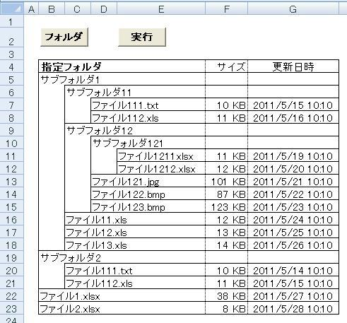

エクセルでファイル一覧を作成.№2（Dir関数1）
エクセルでファイル一覧を作成します、
サブフォルダ以下も全て取得し、一覧表示します、
その前に、マクロって何？と言う人は、
このあたりをお読みください。
モジュールの挿入方法や、変数定義については、本シリーズでは省略します。
まずは、完成イメージです。

とにかく、ファイルの一覧を取得しなければなりません。
使用するのは、Dir関数です。
FileSystemObjectというのもありますが、古くからあるDir関数をまず覚えてからです。
標準モジュールを追加して下さい。
以下を追加します。
Sub ファイル一覧取得()
Dim strBuf As String
strBuf = Dir(Cells(4,
2))
Cells(5, 2) = strBuf
End Sub
セルB4には、自身のPCに存在するフォルダを指定して下さい。
必ず、最後に"\"を付けて下さい。
マクロを実行すると、セルB5にファィル名が表示されたはずです。
えっ、されない・・・ファィルのないフォルダを指定してもダメですよ。
しかし、これでは１つのファイルしか取得できません。
では、
strBuf = Dir(Cells(4, 2))
Cells(5, 2) = strBuf
strBuf = Dir(Cells(4, 2))
Cells(6, 2) =
strBuf
にしたらどうでしょう、B5もB6も同じファィル名になってしまいましたね。
Dir関数では、次々にファィルを取得する場合は、
２回目からは、フォルダを指定せずに、
strBuf = Dir(Cells(4, 2))
Cells(5, 2) = strBuf
strBuf = Dir()
Cells(6, 2) =
strBuf
のように指定します。
これで、セルB6に次のファィルが表示されました。
しかし、これを延々と続けて書くわけにはいきませんので、
このように書きます。
Sub ファイル一覧取得()
Dim strBuf As String
Dim i As Long
i =
5
strBuf = Dir(Cells(4, 2))
Do While strBuf <>
""
Cells(i, 2) = strBuf
i = i + 1
strBuf =
Dir()
Loop
End Sub
Dir関数は、ファイルすべての取得が終了すると、空白""を返します。
従って、空白以外の間、カウントアップしながら処理を続けます。
Do While strBuf <> ""
・・・
Loop
は、strBufが空白""以外の間、・・・の部分を繰り返し処理します。
「あれっ、サブファルダが表示されない」、それは次回に！
次回は、Dir関数の詳細説明をします。
Do WhileとDo Untilについて
上記のプログラムは、Do Whileを使用していますが、これをDo Until で書けば
Do Until strBuf = ""
となります。
どちらでも同じです。
Whileは「の間」、Untilは「になるまで」になります。
では使い分けはあるのかとの疑問が出てきます。
特にないです。（笑）
If文と同じ考えで良いと考えています。
If A <> B then
AとBが違う場合の処理
Else
AとBが同じう場合の処理
End If
これは、
If A = B then
AとBが同じ場合の処理
Else
AとBが違う場合の処理
End If
と同じです。
しかし、なるべくなら二重否定は使用しない方が好ましいです。
つまり、下の方が好ましい。
しかーし、時と場合によるのです。
プログラミングは言語です。
コンピューターに伝えるだけの言語ではありません、
同じ言語を使う他の人にも伝える必要があります。
そして、なるべく解り易く伝える必要があります。
AとBが違う事が通常（多くの場合）であるなら、上の記述の方が理解し易いのです。
Elseはその他例外の場合の処理と言う事になります。
例外処理を先に書くのは、理解しづらいのです。
戻って、WhileとUntilではどうでしょうか。
Whileを使った方が、否定形になっています。
この意味では、Untilの方が良いともいえます。
しかし、ネットのサンプルの多くは、Whileを使用しています。
その理由ははっきりしませんが。
私はどちらかと言うと、Untilを使う事が多いのですが、ある程度、使い分けしています。
コーディングをしていて、どちらを期待して書いているかの違いです。
「その状態の間は処理するよ」vs「その状態になったら終了するよ」
の違いです。
そして、もう１つの大切な判断基準は、流行です。
プログラミングは言語だと言いました。
言語には流行すたりがあります。
この点では、Whileになるでしょう。
Dir関数をつかっての処理で、Untilを使っているサンプルを見た事がないのです。
私は、昔からの癖で、どちらも使用してしまいますが、
Whileだけを使用するなら、それで統一するというのも、良い判断だと考えます。
また、
Do
・・・
Loop While 条件
という書き方もありますが、私は使いません。
使う事を否定はしませんが、必要性を感じません。
同じテーマ「ファイル一覧を作成」の記事
エクセルでファイル一覧を作成.№1（概要）
エクセルでファイル一覧を作成.№2（Dir関数1）
エクセルでファイル一覧を作成.№3（Dir関数2）
エクセルでファイル一覧を作成.№4（FileLen,FileDateTime）
エクセルでファイル一覧を作成.№5（FileDialog）
エクセルでファイル一覧を作成.№6（FileSystemObject1）
エクセルでファイル一覧を作成.№7（FileSystemObject2）
エクセルでファイル一覧を作成.№8（インデント）
エクセルでファイル一覧を作成.№9（罫線）
エクセルでファイル一覧を作成.№10（完成）
新着記事NEW ・・・新着記事一覧を見る
VBA100本ノック 100本目：WEBから100本ノックのリストを取得｜VBA練習問題（3月3日）
VBA100本ノック 99本目：自動席替え（行列と前後左右が全て違うように）｜VBA練習問題（3月2日）
VBA100本ノック 98本目：席替えルールが守られているか確認｜VBA練習問題（3月1日）
VBA100本ノック 97本目：Accessデータを取得（グループ集計）｜VBA練習問題（2月27日）
VBA100本ノック 96本目：Accessデータを取得（マスタ結合&抽出）｜VBA練習問題（2月26日）
VBA100本ノック 95本目：図形のテキストを検索するフォーム作成｜VBA練習問題（2月24日）
VBA100本ノック 94本目：表範囲からHTMLのtableタグを作成｜VBA練習問題（2月23日）
VBA100本ノック 93本目：複数ブックを連結して再分割｜VBA練習問題（2月22日）
VBA100本ノック 92本目：セルの色を16進で返す関数｜VBA練習問題（2月20日）
VBA100本ノック 91本目：時間計算（残業時間の月間合計）｜VBA練習問題（2月19日）
アクセスランキング ・・・ ランキング一覧を見る
1.最終行の取得（End,Rows.Count）｜VBA入門
2.RangeとCellsの使い方｜VBA入門
3.変数宣言のDimとデータ型｜VBA入門
4.マクロって何？VBAって何？｜VBA入門
5.Range以外の指定方法（Cells,Rows,Columns）｜VBA入門
6.セルのコピー&値の貼り付け（PasteSpecial）｜VBA入門
7.繰り返し処理（For Next)｜VBA入門
8.セルに文字を入れるとは（Range,Value）｜VBA入門
9.マクロはどこに書くの（VBEの起動）｜VBA入門
10.とにかく書いてみよう（Sub,End Sub）｜VBA入門
- ホーム
- マクロVBA応用編
- マクロVBAサンプル集
- ファイル一覧を作成
- エクセルでファイル一覧を作成.№2（Dir関数1）
このサイトがお役に立ちましたら「シェア」「Bookmark」をお願いいたします。
記述には細心の注意をしたつもりですが、
間違いやご指摘がありましたら、「お問い合わせ」からお知らせいただけると幸いです。
掲載のVBAコードは動作を保証するものではなく、あくまでVBA学習のサンプルとして掲載しています。
掲載のVBAコードは自己責任でご使用ください。万一データ破損等の損害が発生しても責任は負いません。